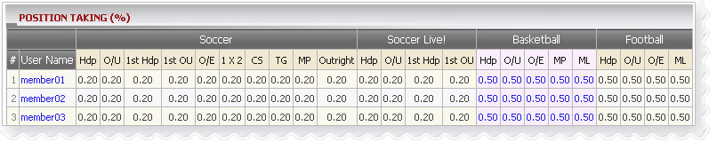

Position Taking
Definition:
Agent position taking is the share percentage which decides the amount that agent wins or loses on each ticket.

Position Taking
How to edit position taking:
Click on member's username to edit position taking.

Edit Position Taking
Note:
- Agent PT <= Agent Max PT set by upline
- Agent PT >= Agent Min PT set by upline
- Agent can set position taking for each bet type on each sport type or utilize the copy function.
- Copy from Handicap then apply to Over/Under, 1st HDP, 1st Over/Under, Odd/Even bet types.
- Copy from 1x2 then apply to Correct Score, Total Goal, Mix Parlay, Out Right bet types.
- For Live betting, copy from Handicap then apply to Over/Under, 1st HDP, 1st Over/Under bet types.